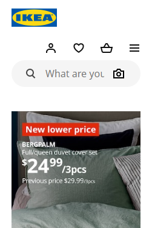

Proximity
H&M
https://www2.hm.com/en_us/index.htmlEach element is placed near others, and photos are used as links to access each section. The principle of proximity is applied in the web design because these elements are closed, and separated at the same time by different sections, such as clothes for children or women.
Contrast
Michael Kors
https://www.michaelkors.com/In this web design, Pictures and typography contrast with the white background. The brown and black tones are standing out over the white space. There are some pictures without a frame, but they have shadows around their shapes to contrast with the background.
Alignment
Ikea
https://www.ikea.com/us/en/
On the home page, there is a big picture that is a perfect aligned with all the elements around, even with the logo, text, and boxes. The alignment principle helps to contrast the white background with all the elements with a clean visual appealing.